"I need a blade by sundown, smith. Something with a bite to it."
Response — placeholder
BRAMtap to continue
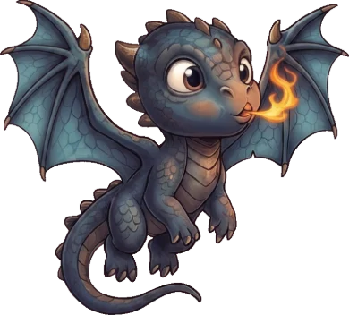
DRAGON
Go to bed?
Are you sure you want to go to bed and start a new day?
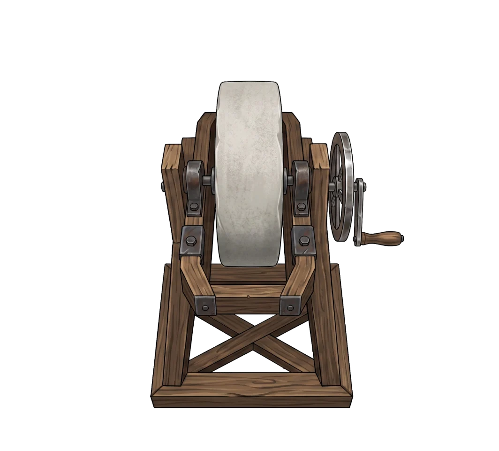
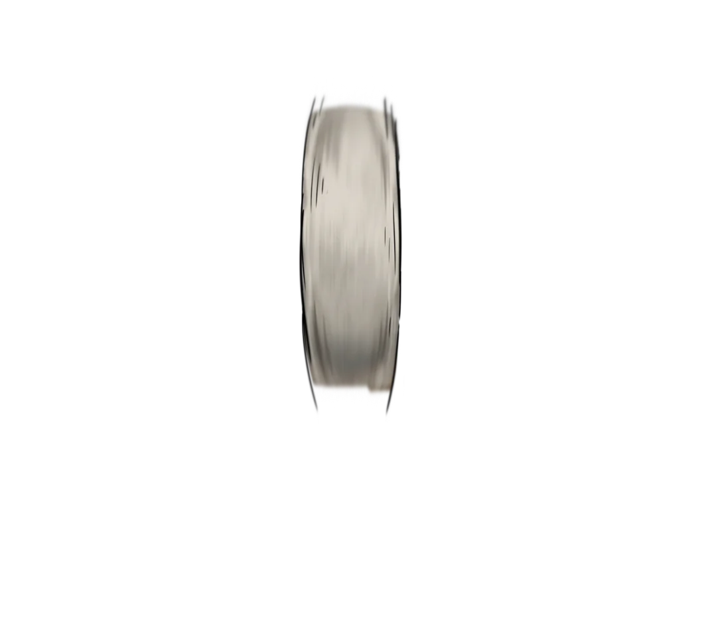
MENU
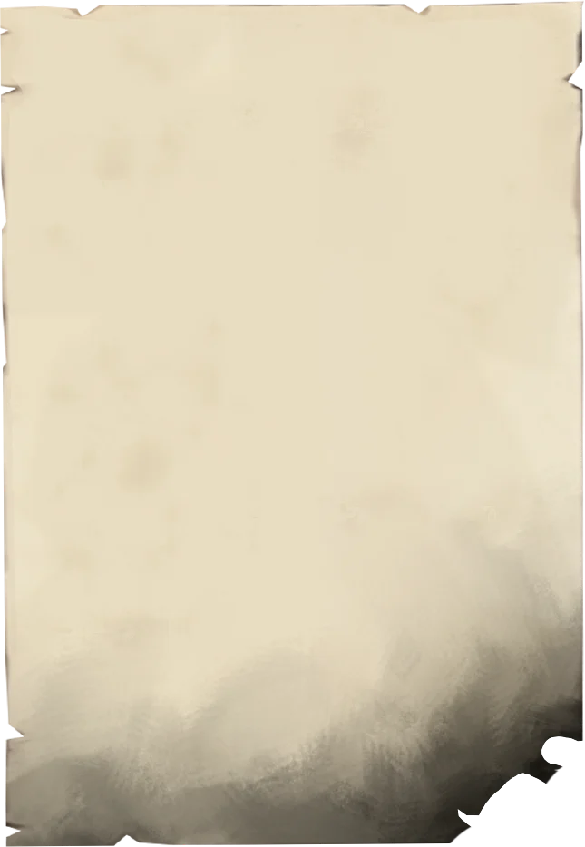
Quests

Travel Log
People I met
Nothing written here yet.
Nothing written here yet.
Character Name
Last visited
—
—
Swords requested — placeholder
Relationship♥♥♥♥♥
🎁
Craft a swift sword.
?
?
?
Turn your phone sideways
Sword Forge is played in landscape.A gift from Bram
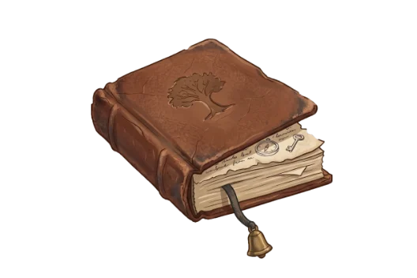
A diary.

DAY 1
Swords sold
Details
Amount sold and value
Total sale
Gold spent
Total profit
🗺️ Ore-path map
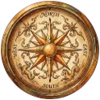
⚔
🔥
3
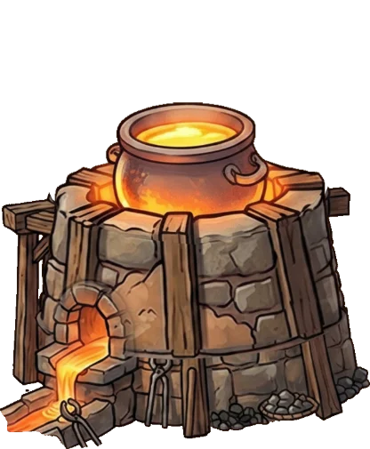
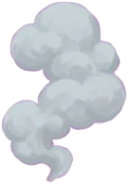
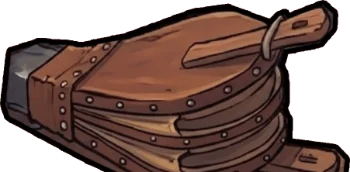
Bellows Smelt · furnace
2
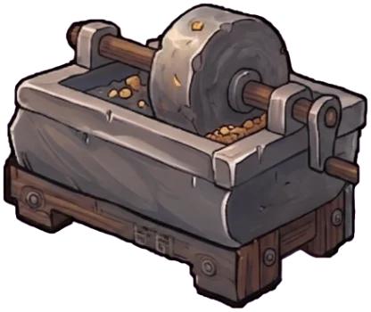
Grind · stone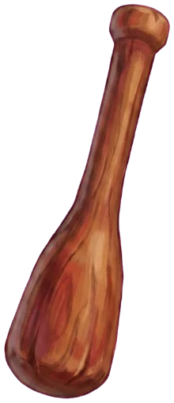
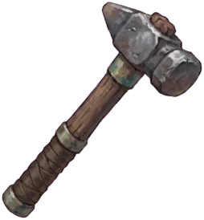
4
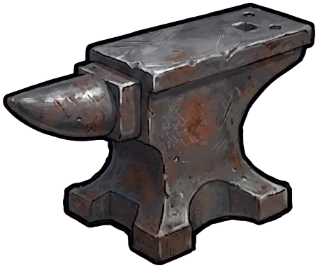
Hammer · anvil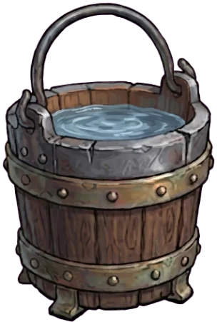
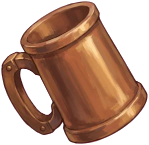
🐉 tap to talk · drag me
DRAGON
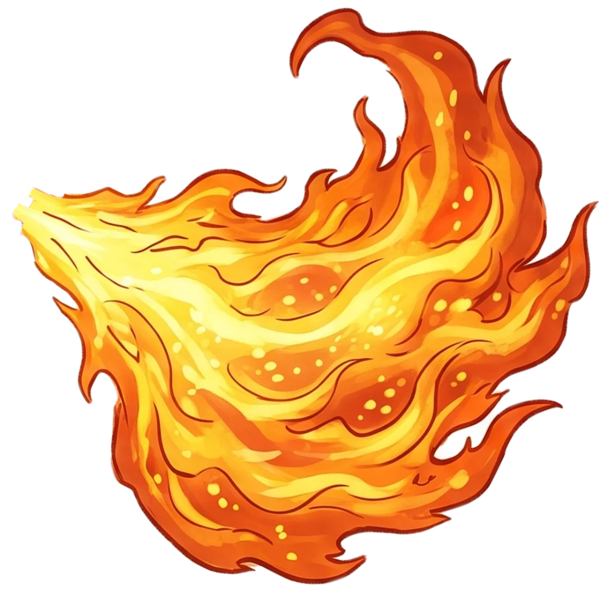
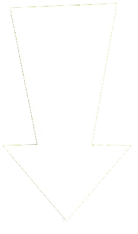
1DAY
🪙246
🛡️72
⭐9/15
1
Ores
Choose a Blade Shape
Pick the shape, then hammer it into form.
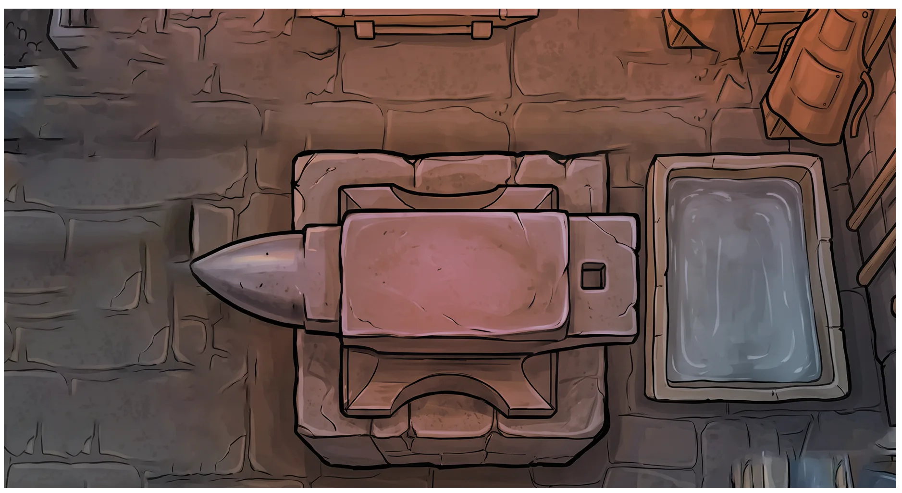
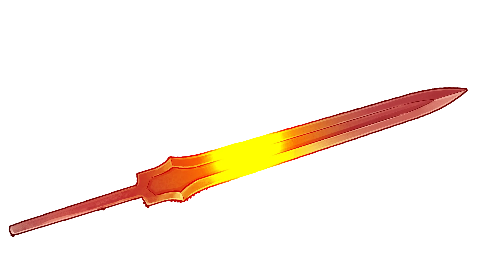
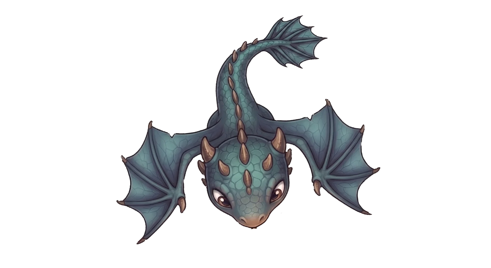
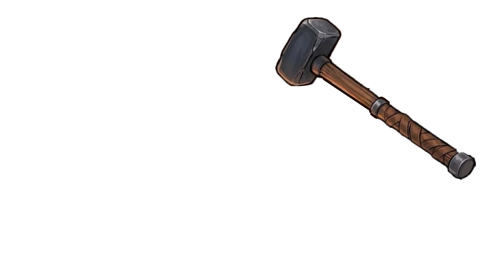
Hammer the Blade
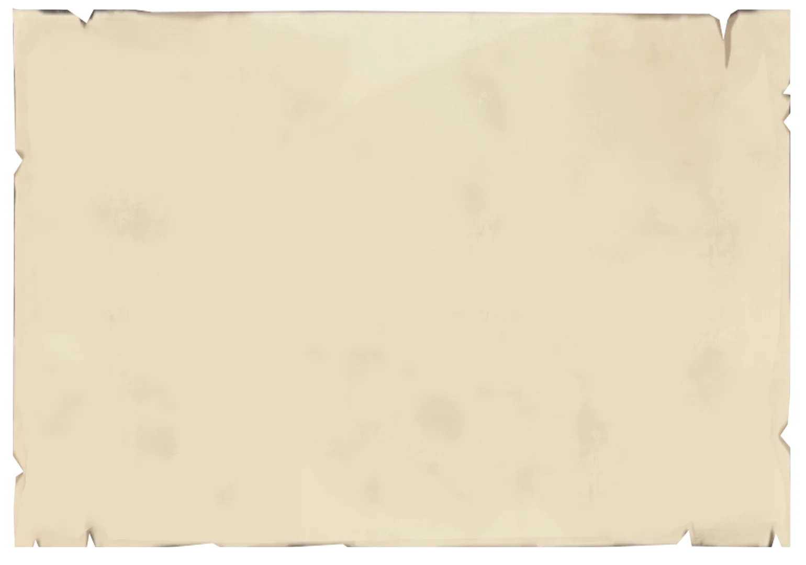
Talent points – X
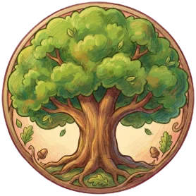
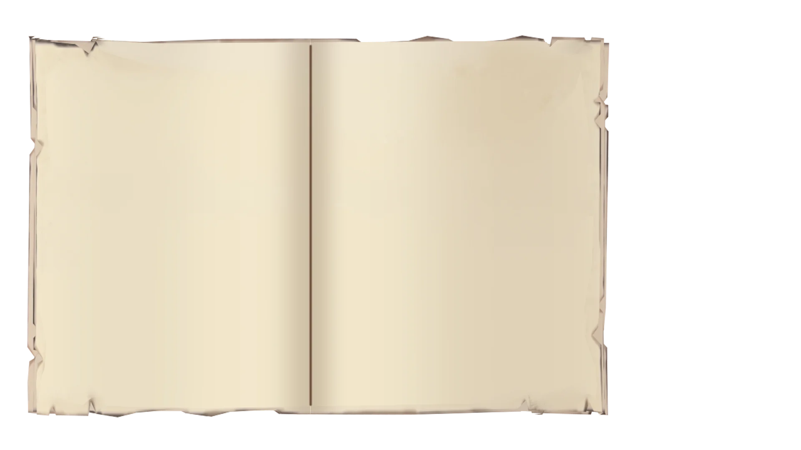
Balanced Sword
Recorded Composition
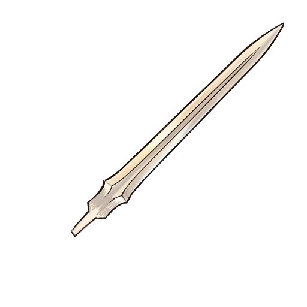
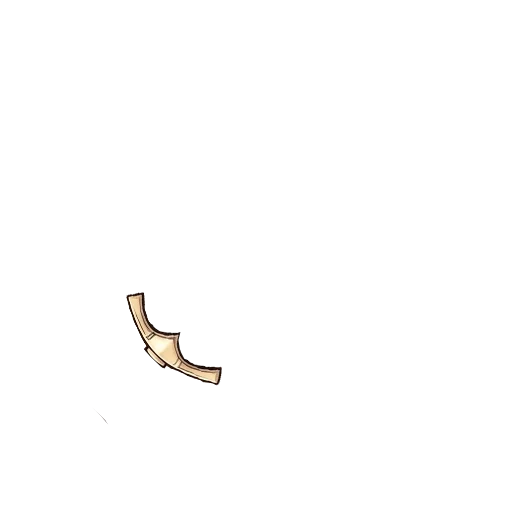
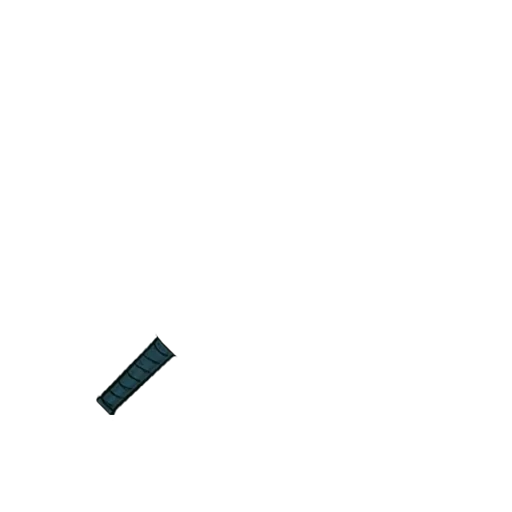
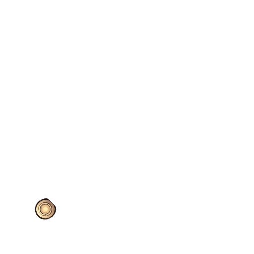
No recipes yet — acquire a trait and it is written down here.
Update Composition
Sword Crafted!
close
Trait Acquired!
continue ›